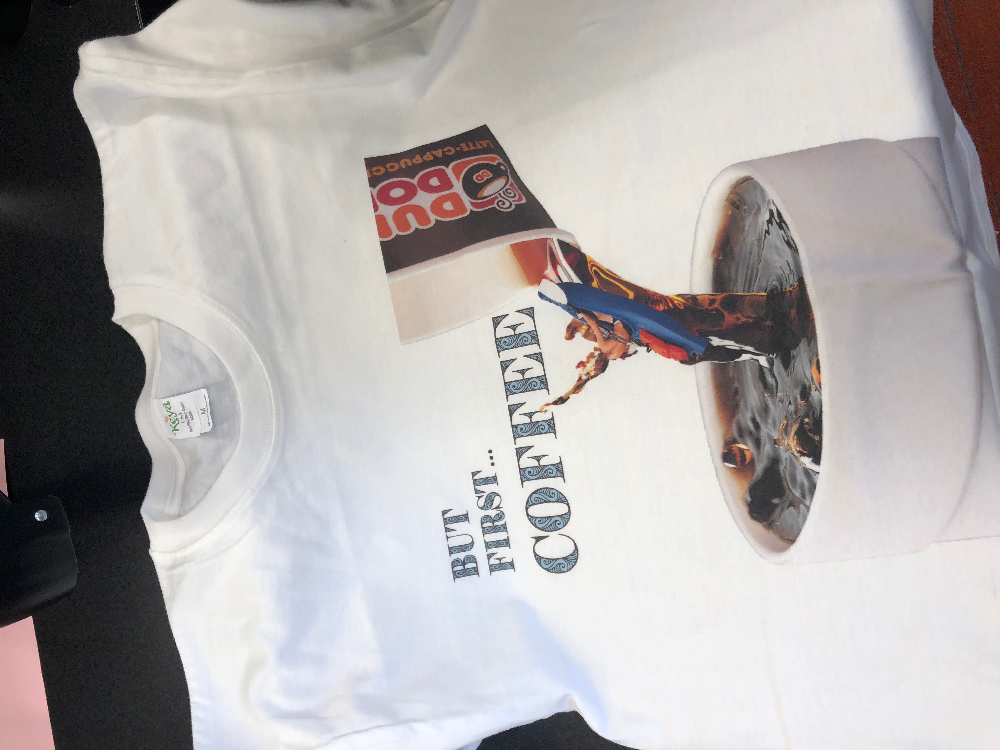
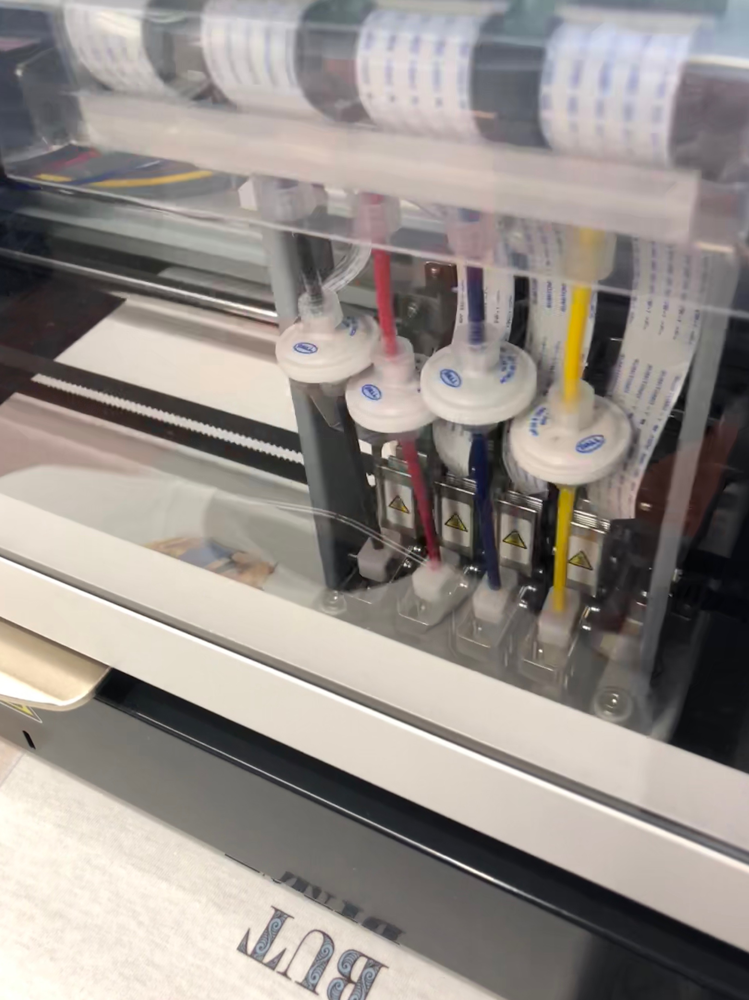

Rotation 3: Design/Garment and Sublimation Printing
Project Description:
For Rotation 3, we got to design and print our own T-shirts! To design my T-shirt, I used photoshop. I have used photoshop before, so the tools were easy to find and use. My T-shirt is a picture of me kayaking in a waterfall of coffee, and it says "But first Coffee" since I love coffee. After finishing my design in photoshop, I used the program GT-3 to format the T-shirt to fit right when printed. To print, you must first put the shirt through the heat press to get out wrinkles. Then, use the Brother GT-3 printer to print your T-shirt! You have to be careful in placing the collar of the shirt below the metal bar on hte machine to make sure the immage you print is centered on the shirt properly. After the shirt is printed, you must put it back through the heat press in order for the ink to dry.


The next machine we used this roatation was the dye sublimation printer. This printer uses heat to transfer dye onto the material you are printing on. The dye sublimation printer is so great becuase of its ability to capture every pixel of the photo or design being printed. The heating and vaporization of ink causes the color that is printed to be vibrant and does not fade like other types of printing.